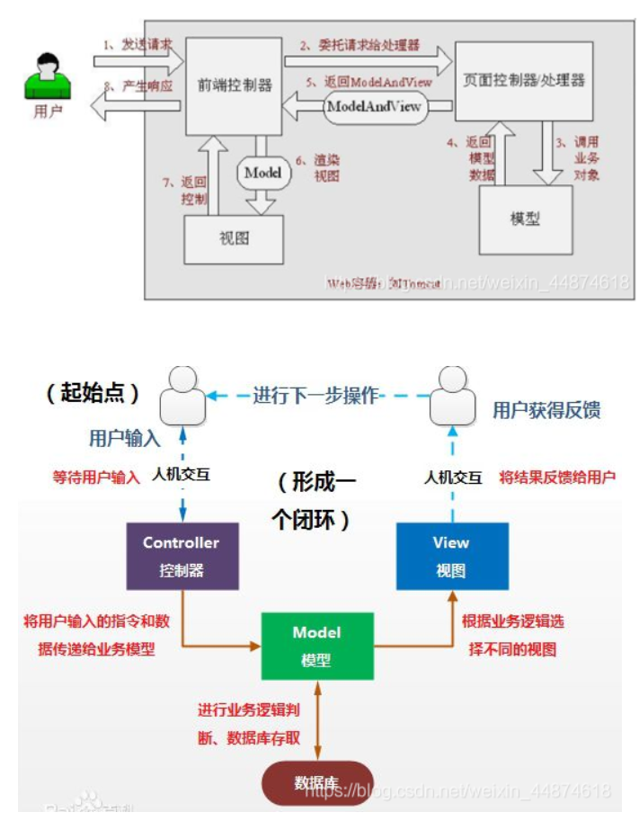

1、回顾Servlet javaSE：
javaWeb：
SSM框架：研究官方文档，锻炼自学能力，锻炼笔记能力，锻炼项目能力 。
SpringMVC+Vue+SpringBoot+SpringCloud+Linux
SSM=Javaweb做项目
Spring：IOC和AOP
SpringMVC：SpringMVC执行流程！
尽量跟着官方文档！
1.1、什么是MVC： MVC是模型(Model)、视图(View)、控制器(Controller)的简写，是一种软件设计规范。
是将业务逻辑、数据、显示分离的方法来组织代码。
MVC主要作用是降低了视图与业务逻辑间的双向偶合。
MVC不是一种设计模式，MVC是一种架构模式。当然不同的MVC存在差异。
重要概念：
1、转发和重定向
2、前端 数据传输 实体类
实体类：用户名、密码、生日等20个
前端：用户名、密码
有必要创建bean来接收数据吗？会有好多null
pogo：User
vo：UserVo 还是实体类，拆掉了很多不必要的字段
dto：数据传输时对象
Model（模型）：数据模型，提供要展示的数据，因此包含数据和行为，可以认为是领域模型或JavaBean组件（包含数据和行为），不过现在一般都分离开来：Value Object（数据Dao） 和 服务层（行为Service）。也就是模型提供了模型数据查询和模型数据的状态更新等功能，包括数据和业务。

1.2、Model1时代
1.3、Model2时代
更好的是方便团队开发！java越大约好维护
面试问题 ：你们的项目的架构，是设计好的，还是演进的？
演进的！
有本书叫：淘宝的10年革命！
Alibaba PHP
随着用户变大 Java
王坚 去IOE MySQL
MySQL：Ali自己的MySQL-》aliSQL、AliRedis
所有的项目从All in one —> 微服务，不是一撮而就。
1.4、回顾Servlet的实现 1、新建Maven项目，导入依赖
1 2 3 4 5 6 7 8 9 10 11 12 13 14 15 16 17 18 19 20 21 22 23 24 25 26 27 28 29 30 31 <dependency > <groupId > junit</groupId > <artifactId > junit</artifactId > <version > 4.12</version > <scope > test</scope > </dependency > <dependency > <groupId > org.springframework</groupId > <artifactId > spring-webmvc</artifactId > <version > 5.3.10</version > </dependency > <dependency > <groupId > javax.servlet</groupId > <artifactId > servlet-api</artifactId > <version > 2.5</version > </dependency > <dependency > <groupId > javax.servlet.jsp</groupId > <artifactId > jsp-api</artifactId > <version > 2.2</version > </dependency > <dependency > <groupId > javax.servlet</groupId > <artifactId > jstl</artifactId > <version > 1.2</version > </dependency >
2、创建springmvc-01-servlet的普通maven项目添加AddFrameworkSupport
3、导入依赖
1 2 3 4 5 6 7 8 9 10 11 12 <dependency > <groupId > javax.servlet</groupId > <artifactId > servlet-api</artifactId > <version > 2.5</version > </dependency > <dependency > <groupId > javax.servlet.jsp</groupId > <artifactId > jsp-api</artifactId > <version > 2.2</version > </dependency >
4、编写一个Servlet类，用来处理用户请求
1 2 3 4 5 6 7 8 9 10 11 12 13 14 15 16 17 18 19 20 21 22 23 24 25 26 27 28 29 30 31 32 33 34 35 36 37 38 39 package com.kuang.servlet; import javax.servlet.ServletException; import javax.servlet.http.HttpServlet; import javax.servlet.http.HttpServletRequest; import javax.servlet.http.HttpServletResponse; import java.io.IOException; /** * @author 郭宇航 * @date 2021/10/1 * @apiNote */ public class HelloServlet extends HttpServlet { @Override protected void doGet(HttpServletRequest req, HttpServletResponse resp) throws ServletException, IOException { //1.获取前端参数 String method = req.getParameter("method"); if (method.equals("add")) { req.getSession().setAttribute("msg","执行了add方法"); } if (method.equals("delete")) { req.getSession().setAttribute("msg","执行了delete方法"); } //2.调用业务层 //3.试图转发或重定向 //转发-用的多 req.getRequestDispatcher("/WEB-INF/jsp/test.jsp").forward(req,resp); //重定向 //resp.sendRedirect(""); } @Override protected void doPost(HttpServletRequest req, HttpServletResponse resp) throws ServletException, IOException { doGet(req,resp); } }
5、配置servlet,web.xml
1 2 3 4 5 6 7 8 9 10 11 12 13 14 15 16 17 18 19 20 21 22 23 <?xml version="1.0" encoding="UTF-8"?> <web-app xmlns ="http://xmlns.jcp.org/xml/ns/javaee" xmlns:xsi ="http://www.w3.org/2001/XMLSchema-instance" xsi:schemaLocation ="http://xmlns.jcp.org/xml/ns/javaee http://xmlns.jcp.org/xml/ns/javaee/web-app_4_0.xsd" version ="4.0" > <servlet > <servlet-name > hello</servlet-name > <servlet-class > com.kuang.servlet.HelloServlet</servlet-class > </servlet > <servlet-mapping > <servlet-name > hello</servlet-name > <url-pattern > /hello</url-pattern > </servlet-mapping > <session-config > <session-timeout > 1500</session-timeout > </session-config > <welcome-file-list > <welcome-file > from.jsp</welcome-file > </welcome-file-list > </web-app >
6、创建from.jsp(web/)和test.jsp(web/WEB-INF/jsp)
1 2 3 4 5 6 7 8 9 10 11 12 13 14 15 16 17 18 19 20 21 <%-- Created by IntelliJ IDEA. User: 郭宇航 Date: 2021/10/1 Time: 16:30 To change this template use File | Settings | File Templates. --%> <%@ page contentType="text/html;charset=UTF-8" language="java" %> <html > <head > <title > From</title > </head > <body > <form method ="post" action ="/hello" > <input type ="text" name ="method" > <input type ="submit" > </form > </body > </html >
1 2 3 4 5 6 7 8 9 10 11 12 13 14 15 16 17 18 <%-- Created by IntelliJ IDEA. User: 郭宇航 Date: 2021/10/1 Time: 16:26 To change this template use File | Settings | File Templates. --%> <%@ page contentType="text/html;charset=UTF-8" language="java" %> <html > <head > <title > Test</title > </head > <body > ${msg} </body > </html >
7、配置并启动tomcat，测试
http://localhost:8080/hello?method=add
MVVM：M、V、VM：ViewModel双向绑定。
2、SpringMvc 2.1、什么是SpringMvc 2.1.1、概述 SpringMvc是SpringFramework的一部分，是基于Java实现的MVC的轻量级的Web框架。
新文档官网：https://docs.spring.io/spring-framework/docs/current/reference/html/web.html#mvc-servlet
老文档：https://docs.spring.io/spring-framework/docs/4.3.24.RELEASE/spring-framework-reference/html/
https://docs.spring.io/spring-framework/docs/4.3.24.RELEASE/spring-framework-reference/html/mvc.html#mvc-servlet
我们为什么学习SpringMVC呢？
特点：
1.轻量级，简单易学
2.高效，基于请求与响应的MVC框架
3.与Spring兼容性好，无缝结合，可以将所有SpringMVC中用到的类，注册到Spring中！
4.约定优于配置
5.功能强大：RESTful、数据验证、格式化、本地化、主题等
6.简单灵活
2.2.2、搭建HelloMVC springmvc-02-hellomvc
步骤：
1.新建moudle，添加web支持！
2.导入Springmvc依赖
3.配置web.xml，注册DispatcherServlet
1 2 3 4 5 6 7 8 9 10 11 12 13 14 15 16 17 18 19 20 21 22 23 24 25 26 <?xml version="1.0" encoding="UTF-8"?> <web-app xmlns ="http://xmlns.jcp.org/xml/ns/javaee" xmlns:xsi ="http://www.w3.org/2001/XMLSchema-instance" xsi:schemaLocation ="http://xmlns.jcp.org/xml/ns/javaee http://xmlns.jcp.org/xml/ns/javaee/web-app_4_0.xsd" version ="4.0" > <servlet > <servlet-name > dispatcher</servlet-name > <servlet-class > org.springframework.web.servlet.DispatcherServlet</servlet-class > <init-param > <param-name > contextConfigLocation</param-name > <param-value > classpath:springmvc-servlet.xml</param-value > </init-param > <load-on-startup > 1</load-on-startup > </servlet > <servlet-mapping > <servlet-name > dispatcher</servlet-name > <url-pattern > /*</url-pattern > </servlet-mapping > <listener > <listener-class > org.springframework.web.context.ContextLoaderListener</listener-class > </listener > </web-app >
4.新建springmvc-servlet.xml
1 2 3 4 5 6 7 8 9 10 11 12 13 14 15 16 17 18 <?xml version="1.0" encoding="UTF-8"?> <beans xmlns ="http://www.springframework.org/schema/beans" xmlns:xsi ="http://www.w3.org/2001/XMLSchema-instance" xsi:schemaLocation ="http://www.springframework.org/schema/beans http://www.springframework.org/schema/beans/spring-beans.xsd" > <bean class ="org.springframework.web.servlet.handler.BeanNameUrlHandlerMapping" /> <bean class ="org.springframework.web.servlet.mvc.SimpleControllerHandlerAdapter" /> <bean class ="org.springframework.web.servlet.view.InternalResourceViewResolver" id ="internalResourceViewResolver" > <property name ="prefix" value ="/WEB-INF/jsp" /> <property name ="suffix" value =".jsp" /> </bean > </beans >
5.编写操作接口Controller
1 2 3 4 5 6 7 8 9 10 11 12 13 14 15 16 17 18 19 20 21 22 23 24 25 26 27 package com.kuang.controller; import org.springframework.web.servlet.ModelAndView; import org.springframework.web.servlet.mvc.Controller; import javax.servlet.http.HttpServletRequest; import javax.servlet.http.HttpServletResponse; /** * @author 郭宇航 * @date 2021/10/1 * @apiNote */ public class HelloController implements Controller { public ModelAndView handleRequest(HttpServletRequest request, HttpServletResponse response) throws Exception { //ModelAndView 模型和试图 ModelAndView mv = new ModelAndView(); //封装对象，放到ModelAndView中 mv.addObject("msg","HelloSpringMVC"); //封装要跳转的试图，放到ModelAndView中,/WEB-INF/jsp/hello.jsp mv.setViewName("hello"); return null; } }
6.将Controller注册到bean
1 2 3 4 5 6 7 8 9 10 11 12 13 14 15 16 17 18 19 20 <?xml version="1.0" encoding="UTF-8"?> <beans xmlns ="http://www.springframework.org/schema/beans" xmlns:xsi ="http://www.w3.org/2001/XMLSchema-instance" xsi:schemaLocation ="http://www.springframework.org/schema/beans http://www.springframework.org/schema/beans/spring-beans.xsd" > <bean class ="org.springframework.web.servlet.handler.BeanNameUrlHandlerMapping" /> <bean class ="org.springframework.web.servlet.mvc.SimpleControllerHandlerAdapter" /> <bean class ="org.springframework.web.servlet.view.InternalResourceViewResolver" id ="internalResourceViewResolver" > <property name ="prefix" value ="/WEB-INF/jsp" /> <property name ="suffix" value =".jsp" /> </bean > <bean id ="/hello" class ="com.kuang.controller.HelloController" /> </beans >
7.创建跳转页面/WEB-INF/jsp/hello.jsp
1 2 3 4 5 6 7 8 9 10 11 12 13 14 15 16 17 18 <%-- Created by IntelliJ IDEA. User: 郭宇航 Date: 2021/10/1 Time: 19:27 To change this template use File | Settings | File Templates. --%> <%@ page contentType="text/html;charset=UTF-8" language="java" %> <html > <head > <title > ${msg}</title > </head > <body > ${msg} </body > </html >
注意问题：
1.可能遇到404，问题，排查步骤：
1.查看控制台输出，缺少什么jar包
2.如果jar包存在，显示无法输出，就在IDEA的项目发布中，添加lib依赖！
3.重启Tomcat
4.D:\Application\apache-tomcat-9.0.34\apache-tomcat-9.0.34\conf
1 109 tomcat.util.scan.StandardJarScanFilter.jarsToSkip=***.jar**
5.检查是不是
1 2 3 4 5 <servlet-name > dispatcher</servlet-name > <url-pattern > /*</url-pattern > </servlet-mapping > 即路径写错，/后面不能加*，通常情况下都是 /即可，表示拦截所有请求。
2.2.3、SpringMVC执行原理 初理解：
Spring的web框架围绕DispatcherServlet【调度Servlet】设计。
DispatcherServlet是请求分发的作用。将请求分发到不同的处理器。从Spring2.5和Java5开启可以使用注解的controller声明方式开发。
DispatcherServlet实际是一个Servlet，继承自HttpServlet基类。也有doGET和doPOST等。
SpringMVC原理如下图：
再理解：
注：实现都是springmvc实现的，我们只需要实现虚线的（3个）
分析执行流程：
1.DispatcherServlet是前端控制器，是整个SpringMVC的控制中心。用户发送的请求，都会被DispathcerServlet接收请求并拦截请求。
1 2 3 4 5 6 7 8 9 10 11 12 13 14 15 16 17 18 19 <servlet > <servlet-name > dispatcher</servlet-name > <servlet-class > org.springframework.web.servlet.DispatcherServlet</servlet-class > <init-param > <param-name > contextConfigLocation</param-name > <param-value > classpath:springmvc-servlet.xml</param-value > </init-param > <load-on-startup > 1</load-on-startup > </servlet > <servlet-mapping > <servlet-name > dispatcher</servlet-name > **<url-pattern > /</url-pattern > ** </servlet-mapping >
2.HandlerMapping为处理器映射。由DispathcherServlet自行调用。
HandlerMapping根据请求的url调用HandlerExecution查找handler处理器（/hello）。
1 2 <bean class ="org.springframework.web.servlet.handler.BeanNameUrlHandlerMapping" />
在执行一个HandlerExecution操作后，把结果（hello）又返回给DispathcherServlet。
3.HandlerExecution表示具体的Handler，其主要作用是根据url（/hello）查找控制器，如上url查到的控制器为hello。
4.HandlerExecution将解析后的信息传递给DispathcherServlet，如解析控制器映射等。
5.DispathcherServlet调用HandlerAdapter，HandlerAdapter表示处理器适配器（如查u盘后，usb找usb适配器）。其按照特定的规则去执行Handler。找具体的hello控制器的类。
1 2 <bean class ="org.springframework.web.servlet.mvc.SimpleControllerHandlerAdapter" />
6.HandlerAdapter让具体的控制器Controller（HelloController.java）执行。
Controller执行相关操作，并将执行后的信息返回给HandlerAdapter，如ModelAndView。
8.HandlerAdapter将Controller将执行后的信息ModelAndView（视图逻辑名和模型）返回给DispathcherServlet。
9.DispathcherServlet将调用视图解析器ViewResolver。
ViewResolver来解析DispathcherServlet传递过来的ModelAndView里的逻辑视图名，并拼接视图的名字，找到对应的视图。
将ModelAndView里的Model数据渲染到视图上。
1 2 3 4 5 6 7 8 9 10 <bean class ="org.springframework.web.servlet.view.InternalResourceViewResolver" id ="internalResourceViewResolver" > <property name ="prefix" value ="/WEB-INF/jsp/" /> <property name ="suffix" value =".jsp" /> </bean >
10.视图解析器ViewResolver将解析的视图名传递给DispathcherServlet。
11.DispathcherServlet根据视图解析器ViewResolver的结果调用具体的视图。
12.最终视图呈现给用户。
原理总结：先拦截、再找url对应的controller、再找对应的视图、再展示视图。
我们需要做的只有controller调用service层，然后返回视图名和数据。
*注意：springmvc中 / 和 /**
小结：实际开发不会这么写，用注解开发。
2.2、注解开发SpringMvc springmvc-03-annotation
注：maven文件过滤问题
1 2 3 4 5 6 7 8 9 10 11 12 13 14 15 16 17 18 19 20 <build > <resources > <resource > <directory > src/main/java</directory > <includes > <include > **/*.properties</include > <include > **/*.xml</include > </includes > <filtering > false</filtering > </resource > <resource > <directory > src/main/resources</directory > <includes > <include > **/*.properties</include > <include > **/*.xml</include > </includes > <filtering > false</filtering > </resource > </resources > </build >
1、创建maven项目，引入依赖和引入web支持
1 2 3 4 5 6 7 8 9 10 11 12 13 14 15 16 17 18 19 20 21 22 23 24 25 26 27 28 29 30 31 32 33 <dependencies > <dependency > <groupId > junit</groupId > <artifactId > junit</artifactId > <version > 4.12</version > <scope > test</scope > </dependency > <dependency > <groupId > org.springframework</groupId > <artifactId > spring-webmvc</artifactId > <version > 5.3.10</version > </dependency > <dependency > <groupId > javax.servlet</groupId > <artifactId > servlet-api</artifactId > <version > 2.5</version > </dependency > <dependency > <groupId > javax.servlet.jsp</groupId > <artifactId > jsp-api</artifactId > <version > 2.2</version > </dependency > <dependency > <groupId > javax.servlet</groupId > <artifactId > jstl</artifactId > <version > 1.2</version > </dependency > </dependencies >
2、配置web.xml
1 2 3 4 5 6 7 8 9 10 11 12 13 14 15 16 17 18 19 20 21 22 <?xml version="1.0" encoding="UTF-8"?> <web-app xmlns ="http://xmlns.jcp.org/xml/ns/javaee" xmlns:xsi ="http://www.w3.org/2001/XMLSchema-instance" xsi:schemaLocation ="http://xmlns.jcp.org/xml/ns/javaee http://xmlns.jcp.org/xml/ns/javaee/web-app_4_0.xsd" version ="4.0" > <servlet > <servlet-name > dispatcher</servlet-name > <servlet-class > org.springframework.web.servlet.DispatcherServlet</servlet-class > <init-param > <param-name > contextConfigLocation</param-name > <param-value > classpath:spring-mvc.xml</param-value > </init-param > </servlet > <servlet-mapping > <servlet-name > dispatcher</servlet-name > <url-pattern > /</url-pattern > </servlet-mapping > <welcome-file-list > <welcome-file > /index.jsp</welcome-file > </welcome-file-list > </web-app >
3、添加spring配置文件
让IOC的注解生效
静态资源过滤：HTML、JS、CSS、图片、视频…
MVC的注解驱动(注册处理器映射器和处理器适配器的注解)
配置视图解析器
在resource目录添加spring-mvc.xml文件。为了支持注解的IOC，设置了自动扫描包功能。
1 2 3 4 5 6 7 8 9 10 11 12 13 14 15 16 17 18 19 20 21 22 23 24 25 26 27 28 29 30 31 32 33 34 35 36 37 <?xml version="1.0" encoding="UTF-8"?> <beans xmlns ="http://www.springframework.org/schema/beans" xmlns:xsi ="http://www.w3.org/2001/XMLSchema-instance" xmlns:context ="http://www.springframework.org/schema/context" xmlns:mvc ="http://www.springframework.org/schema/mvc" xsi:schemaLocation ="http://www.springframework.org/schema/beans http://www.springframework.org/schema/beans/spring-beans-4.2.xsd http://www.springframework.org/schema/mvc http://www.springframework.org/schema/mvc/spring-mvc-4.2.xsd http://www.springframework.org/schema/context http://www.springframework.org/schema/context/spring-context-4.2.xsd" > <context:component-scan base-package ="com.kuang" /> <mvc:default-servlet-handler /> <mvc:annotation-driven /> <bean class ="org.springframework.web.servlet.view.InternalResourceViewResolver" id ="internalResourceViewResolver" > <property name ="prefix" value ="/WEB-INF/jsp/" /> <property name ="suffix" value =".jsp" /> </bean > </beans >
在视图解析器中我们把视图文件放到/WEB-INF/jsp目录下，保证视图安全。
4、创建Controller
1 2 3 4 5 6 7 8 9 10 11 12 13 14 15 16 17 18 19 20 21 22 23 24 25 26 27 28 29 30 31 package com.kuang.comtroller; import org.springframework.stereotype.Controller; import org.springframework.ui.Model; import org.springframework.web.bind.annotation.RequestMapping; import org.springframework.web.bind.annotation.RestController; /** * @author 郭宇航 * @date 2021/10/1 * @apiNote */ @Controller //@RestController 不调用视图解析器，直接返回数据，json格式用他 @RequestMapping("/hello") public class HelloController { /** * 访问地址 http://localhost/hello/h1 * 封装数据到 model * @param model */ @RequestMapping(value ="/h1") public String hello(Model model) { //向模型中添加属性msg和值，可以在jsp中取出来并渲染 model.addAttribute("msg", "Hello,SpringMVCAnnotation!"); //会被视图解析器处理,hello是视图名字 return "hello"; } }
5、创建jsp页面，/WEB-INF/jsp/hello.jsp
1 2 3 4 5 6 7 8 9 10 11 12 13 14 15 16 17 18 <%-- Created by IntelliJ IDEA. User: 郭宇航 Date: 2021/10/1 Time: 22:11 To change this template use File | Settings | File Templates. --%> <%@ page contentType="text/html;charset=UTF-8" language="java" %> <html > <head > <title > Title</title > </head > <body > ${msg} </body > </html >
6.测试http://localhost:8080/hello/h1
7.有问题，可以在项目结构中添加lib包
8.步骤总结：
创建项目
导入jar包
添加web支持
在web.xml在配置dispatcherservlet
在resource下创建springmvc.xml
创建controller
2.3、Controller配置总结 2.3.1、控制器Controller 控制器提供访问程序的行为，通常通过实现接口定义或注解定义两种方式。
控制器负责解析用户请求并将器转换为一个模型，返回到视图解析器。
在SpringMVC中，一个控制器中可以包含多个方法。
在SpringMVC中，对于Controller的配置有很多种。
我们来看看有哪些方式可以实现：
2.3.2、使用实现Controller接口的方式 springmvc-04-controller
测试：
mvc配置文件只留下视图解析器
1 2 3 4 5 6 7 8 9 10 11 12 13 14 15 16 17 18 19 20 21 22 23 24 25 26 27 28 29 30 31 32 33 34 35 36 <?xml version="1.0" encoding="UTF-8"?> <beans xmlns ="http://www.springframework.org/schema/beans" xmlns:xsi ="http://www.w3.org/2001/XMLSchema-instance" xmlns:context ="http://www.springframework.org/schema/context" xmlns:mvc ="http://www.springframework.org/schema/mvc" xsi:schemaLocation ="http://www.springframework.org/schema/beans http://www.springframework.org/schema/beans/spring-beans-4.2.xsd http://www.springframework.org/schema/mvc http://www.springframework.org/schema/mvc/spring-mvc-4.2.xsd http://www.springframework.org/schema/context http://www.springframework.org/schema/context/spring-context-4.2.xsd" > <bean class ="org.springframework.web.servlet.view.InternalResourceViewResolver" id ="internalResourceViewResolver" > <property name ="prefix" value ="/WEB-INF/jsp/" /> <property name ="suffix" value =".jsp" /> </bean > </beans >
1、编写一个Controller类，ControllerTest1
1 2 3 4 5 6 7 8 9 10 11 12 13 14 15 16 17 18 19 20 21 22 23 24 25 package com.kuang.controller; import org.springframework.web.servlet.ModelAndView; import org.springframework.web.servlet.mvc.Controller; import javax.servlet.http.HttpServletRequest; import javax.servlet.http.HttpServletResponse; /** * @author 郭宇航 * @date 2021/10/1 * @apiNote */ //只要实现了Controller接口的类，这就是一个控制器 public class ControllerTest1 implements Controller { @Override public ModelAndView handleRequest(HttpServletRequest request, HttpServletResponse response) throws Exception { ModelAndView mv = new ModelAndView(); mv.addObject("msg","ControllerTest1"); mv.setViewName("test"); return mv; } }
2、在spring配置文件中添加ControllerTest1的bean
1 <bean name ="/t1" class ="com.kuang.controller.ControllerTest1" />
说明：
这里没有显示的配置映射器和适配器。
一个控制器只能写一个方法。
2.3.3、使用注解实现Controller方式 回忆：IOC时还讲过和Controller效果一样的注解
1 2 3 4 @Component //只是组件意思 @Service //业务层 @Controller //控制层 @Repository //dao层
1、创建ControllerTest2
使用注解必须开启包扫描
1 2 3 4 5 6 7 8 9 10 11 12 13 14 15 16 17 18 19 20 21 22 23 24 25 26 27 28 29 30 31 32 33 34 35 36 37 38 39 <?xml version="1.0" encoding="UTF-8"?> <beans xmlns ="http://www.springframework.org/schema/beans" xmlns:xsi ="http://www.w3.org/2001/XMLSchema-instance" xmlns:context ="http://www.springframework.org/schema/context" xmlns:mvc ="http://www.springframework.org/schema/mvc" xsi:schemaLocation ="http://www.springframework.org/schema/beans http://www.springframework.org/schema/beans/spring-beans-4.2.xsd http://www.springframework.org/schema/mvc http://www.springframework.org/schema/mvc/spring-mvc-4.2.xsd http://www.springframework.org/schema/context http://www.springframework.org/schema/context/spring-context-4.2.xsd" > <context:component-scan base-package ="com.kuang" /> <bean class ="org.springframework.web.servlet.view.InternalResourceViewResolver" id ="internalResourceViewResolver" > <property name ="prefix" value ="/WEB-INF/jsp/" /> <property name ="suffix" value =".jsp" /> </bean > <bean name ="/t1" class ="com.kuang.controller.ControllerTest1" /> </beans >
1 2 3 4 5 6 7 8 9 10 11 12 13 14 15 16 17 18 19 20 21 22 23 24 package com.kuang.controller; import org.springframework.stereotype.Controller; import org.springframework.ui.Model; import org.springframework.web.bind.annotation.RequestMapping; import org.springframework.web.servlet.ModelAndView; import javax.servlet.http.HttpServletRequest; import javax.servlet.http.HttpServletResponse; /** * @author 郭宇航 * @date 2021/10/1 * @apiNote */ @Controller public class ControllerTest2 { @RequestMapping("/t2") public String test1(Model model) { model.addAttribute("msg", "ControllerTest2"); return "test"; } }
说明：
没有开启、，也可访问
http://localhost:8080/t2 。
jsp可以复用。
除了这2中还有2种方式。最常用注解。
idea使用技巧：
改java代码使用redeploy，改配置文件需要重新启动，只改前端页面使用刷新。
2.4、RequestMappimg @RequestMapping注解用于映射url到控制器或一个特定的方法。
1、创建ControllerTest3
1 2 3 4 5 6 7 8 9 10 11 12 13 14 15 16 17 18 19 20 21 package com.kuang.controller; import org.springframework.stereotype.Controller; import org.springframework.ui.Model; import org.springframework.web.bind.annotation.RequestMapping; /** * @author 郭宇航 * @date 2021/10/1 * @apiNote */ @Controller @RequestMapping("/c3") public class ControllerTest3 { @RequestMapping("/t1") public String test1(Model model) { model.addAttribute("msg", "ControllerTest2"); return "test"; } }
2、访问http://localhost:8080/c3/t1
要先访问类，在访问方法。admin可以在类上放一个admin，其他都在一个类中写方法就好了。
2.5、RestFul风格 2.5.1、概念 RestFul就是一个资源定位及资源操作的风格。不是标准也不是协议，只是一种风格。基于这个风格设计的软件更简洁、更有层次感、更易于实现缓存机制 。
2.5.2、功能 资源：互联网所有的事务都可以被抽象为资源
资源操作：使用POST、DELETE、PUT、GET，使用不同方法对资源进行操作
分别对应：添加、删除、修改、查询
2.5.3、传统方式操作资源 通过不同的参数和链接实现不同的效果！方法单一，只有post和get
http://localhost/item/queryItem.action?id=1 查询，GET
http://localhost/item/saveItem.action 新增，POST
http://localhost/item/updateItem.action 更新，POST
http://localhost/item/deleteItem.action?id=1 删除，GET或POST
2.5.4、RestFul风格操作资源 可以通过不同的请求方式(method)实现不同的效果！如下：请求地址一样，但是功能可以不一样!
http://localhost/item/1 查询，GET
http://localhost/item 新增，POST
http://localhost/item 更新，PUT
http://localhost/item/1 删除，DELETE
2.5.5、学习测试 先用传统方式:
1、在springmvc-04-controller 中新建RestFulController
1 2 3 4 5 6 7 8 9 10 11 12 13 14 15 16 17 18 19 20 21 22 package com.kuang.controller; import com.sun.org.apache.xpath.internal.operations.Mod; import org.springframework.stereotype.Controller; import org.springframework.ui.Model; import org.springframework.web.bind.annotation.RequestMapping; /** * @author 郭宇航 * @date 2021/10/1 * @apiNote */ @Controller public class RestFulController { @RequestMapping("/add") public String test1(int a, int b, Model model) { int res = a + b; model.addAttribute("msg", "结果为：" + res); return "test"; } }
2、访问:http://localhost:8080/add?a=1&b=2
修改用RestFul方式:
在SpringMVC中可以使用@PathVariable注解，让方法的参数值绑定到一个URI模板变量中。
1、修改RestFulController
1 2 3 4 5 6 7 8 9 10 11 12 13 14 15 16 17 18 19 20 21 22 23 24 package com.kuang.controller; import com.sun.org.apache.xpath.internal.operations.Mod; import org.springframework.stereotype.Controller; import org.springframework.ui.Model; import org.springframework.web.bind.annotation.*; /** * @author 郭宇航 * @date 2021/10/1 * @apiNote */ @Controller public class RestFulController { //@RequestMapping(value="/add/{a}/{b}",method = RequestMethod.GET) @GetMapping("/add/{a}/{b}") public String test1(@PathVariable int a, @PathVariable int b, Model model) { int res = a + b; model.addAttribute("msg", "结果为：" + res); return "test"; } }
2.测试访问http://localhost:8080/add/1/2 GET
方法基本的注解变体有如下几个：
1 2 3 4 5 @GetMapping @PostMapping @PutMapping @DeleteMapping @PatchMapping
3.相同路径不同效果，修改java
1 2 3 4 5 6 7 8 9 10 11 12 13 14 15 16 17 18 19 20 21 22 23 24 25 26 27 28 29 30 31 32 package com.kuang.controller; import com.sun.org.apache.xpath.internal.operations.Mod; import org.springframework.stereotype.Controller; import org.springframework.ui.Model; import org.springframework.web.bind.annotation.*; /** * @author 郭宇航 * @date 2021/10/1 * @apiNote */ @Controller public class RestFulController { //@RequestMapping(value="/add/{a}/{b}",method = RequestMethod.GET) @GetMapping("/add/{a}/{b}") public String test1(@PathVariable int a, @PathVariable int b, Model model) { int res = a + b; model.addAttribute("msg", "和为：" + res); return "test"; } //@RequestMapping(value="/add/{a}/{b}",method = RequestMethod.GET) @PostMapping("/add/{a}/{b}") public String test2(@PathVariable int a, @PathVariable int b, Model model) { int res = a * b; model.addAttribute("msg", "乘积为：" + res); return "test"; } }
4.测试访问
http://localhost:8080/add/3/2 GET 和为：5
http://localhost:8080/add/3/2 POST 乘积为：6
小结：
@RequestMapping有name、value、path，name会报错
restful不爆露参数名
小黄鸭调试法：向自己解释一遍，读一遍代码。描述到一半可能找到错误了！
2.6、结果跳转方式-重定向和转发 2.6.1、ModelAndView 设置ModelAndView对象，根据view的名称，和视图解析器跳到指定的页面。
页面：{视图解析器前缀}+viewName+{视图解析器后缀}
1 2 3 4 5 6 7 <bean class ="org.springframework.web.servlet.view.InternalResourceViewResolver" id ="internalResourceViewResolver" > <property name ="prefix" value ="/WEB-INF/jsp/" /> <property name ="suffix" value =".jsp" /> </bean >
对应的controller类
1 2 3 4 5 6 7 8 @Override public ModelAndView handleRequest(HttpServletRequest request, HttpServletResponse response) throws Exception { ModelAndView mv = new ModelAndView(); mv.addObject("msg","ControllerTest1"); mv.setViewName("test"); return mv; }
这些是最老的办法。
2.6.2、调用ServletApi 在springmvc-04-controller中新建ModelTest
通过设置ServletAPI，不需要视图解析器。
1.通过HttpServletResponse进行传输
2.通过HttpServletResponse实现重定向
3.HttpServletRequest实现转发
新建ModelTest:
1 2 3 4 5 6 7 8 9 10 11 12 13 14 15 16 17 @GetMapping("/m1") public void m1(HttpServletRequest request, HttpServletResponse response) throws IOException { response.getWriter().println("Hello,SpringMVC"); } @GetMapping("/m2") public void m2(HttpServletRequest request, HttpServletResponse response) throws IOException { //重定向 response.sendRedirect("/index.jsp"); } @GetMapping("/m3") public void m3(HttpServletRequest request, HttpServletResponse response) throws IOException, ServletException { //转发 request.setAttribute("msg","request.getRequestDispatcher"); request.getRequestDispatcher("/WEB-INF/jsp/test.jsp").forward(request, response); }
不建议这样做
2.6.3、通过SpringMVC实现转发和重定向 一、无视图解析器:
需要自己拼接url
1 2 3 4 5 6 7 8 9 10 11 12 13 14 15 16 17 18 19 20 21 //springmvc-无视图解析器 http://localhost:8080/mvcm1 @GetMapping("/mvcm1") public String mvcm1(){ //转发 return "/index.jsp"; } http://localhost:8080/mvcm2 @GetMapping("/mvcm2") public String mvcm2() { //转发 return "forward:/index.jsp"; } http://localhost:8080/mvcm3 @GetMapping("/mvcm3") public String mvcm3() { //重定向 return "redirect:/index.jsp"; }
转发和重定向都需要自己拼接完整的路径。
返回视图名中添加了前缀forward:或redirect:后不会走视图解析器。
二、配置视图解析器:
1 2 3 4 5 6 7 8 9 10 11 12 13 14 //Springmvc-配置视图解析器 http://localhost:8080/mvcm4 @GetMapping("/mvcm4") public String mvcm4(){ //转发 return "test"; } http://localhost:8080/mvcm5 @GetMapping("/mvcm5") public String mvcm5() { //重定向 return "redirect:/index.jsp"; }
直接返回视图名会走视图解析器。转发不需要拼接完整路径。
添加了前缀redirect:后不会走视图解析器。需要自己拼接完整路径。
2.7、处理提交数据和数据返回前端 在springmvc-04-controller中新建ModelTest
2.7.1、提交的字段名称和处理方法中的参数名一致 提交数据：GET http://localhost:8080/user/test1?name=qinjiang
处理方法：
1 2 3 4 5 6 7 8 9 @GetMapping("/test1") public String test1(String name, Model model) { //1.接收前端参数 System.out.println(name); //2.将返回结果传递给前端 model.addAttribute("msg", name); //3.跳转试图 return "test"; }
2.7.2、提交的字段名称和处理方法中的参数名不一致 @RequestParam(“name”) String userName
提交数据：GET http://localhost:8080/user/test2?username=qinjiang
处理方法：
1 2 3 4 5 6 7 8 9 @GetMapping("/test2") public String test2(@RequestParam("username")String name, Model model) { //1.接收前端参数 System.out.println(name); //2.将返回结果传递给前端 model.addAttribute("msg", name); //3.跳转试图 return "test"; }
必须要写上RequestParam
2.7.3、提交的一个对象 提交数据：GET http://localhost:8080/user/test3?id=1&name=qinjiang&age=21
处理方法：
1 2 3 4 5 6 7 8 9 10 11 12 13 14 /** * 前端传递对象：id，name，age * 接收参数时，判断参数的名字，假设名字直接在方法参数里，直接使用 * 假设传递的是一个对象User，匹配User对象中的字段名。匹配不到为null */ @GetMapping("/test3") public String test3(User user, Model model) { //1.接收前端参数 System.out.println(user.toString()); //2.将返回结果传递给前端 model.addAttribute("msg", user.toString()); //3.跳转试图 return "test"; }
2.7.4、通过ModelAndView返回数据 1 2 3 4 5 6 7 8 @Override public ModelAndView handleRequest(HttpServletRequest request, HttpServletResponse response) throws Exception { ModelAndView mv = new ModelAndView(); mv.addObject("msg","ControllerTest1"); mv.setViewName("test"); return mv; }
2.7.5、通过ModelMap返回数据 class ModelMap extends LinkedHashMap<String, Object>
ModelMap:继承了LinkedHashMap，继承了LinkedHashMap的所有方法和特性。
Model :精简版，大部分使用它，只有简单几个方法，简化了操作和理解。
提交数据：GET http://localhost:8080/user/test4?id=1&name=qinjiang&age=21
处理方法：
1 2 3 4 5 6 7 8 9 @GetMapping("/test4") public String test4(User user,ModelMap map) { //1.接收前端参数 System.out.println(user.toString()); //2.将返回结果传递给前端 map.addAttribute("msg", user.toString()); //3.跳转试图 return "test"; }
2.7.6、通过Model返回数据 1 2 3 4 5 @RequestMapping("/t2") public String test1(Model model) { model.addAttribute("msg", "ControllerTest2"); return "test"; }
2.8、乱码问题 2.8.1、测试 在springmvc-04-controller中新建EncodingController
1 2 3 4 5 6 7 8 9 10 11 12 13 14 15 16 17 18 19 20 21 22 package com.kuang.controller; import org.springframework.stereotype.Controller; import org.springframework.ui.Model; import org.springframework.web.bind.annotation.PostMapping; /** * @author 郭宇航 * @date 2021/10/2 * @apiNote */ @Controller public class EncodingController { @PostMapping("/e1/t1") public String test1(String name, Model model) { System.out.println(name); model.addAttribute("msg", name); return "test"; } }
form.jsp
1 2 3 4 <form method ="post" action ="/e1/t1" > <input type ="text" name ="name" > <input type ="submit" > </form >
测试结果为：éå®èª
2.8.2、过滤器解决乱码 web.xml，配置springmvc的乱码过滤器，注意url-pattern配置为/*
1 2 3 4 5 6 7 8 9 10 11 12 <filter > <filter-name > encoding</filter-name > <filter-class > org.springframework.web.filter.CharacterEncodingFilter</filter-class > <init-param > <param-name > encoding</param-name > <param-value > utf-8</param-value > </init-param > </filter > <filter-mapping > <filter-name > encoding</filter-name > <url-pattern > /*</url-pattern > </filter-mapping >
注意 ：/只过滤请求，如：POST http://localhost:8080/e1/t1?name=秦将 ，
jsp页面提交的会依旧乱码。
乱码解决了，如果解决不了处理思路：
1.检查tomcat配置文件设置编码：
1 2 3 <Connector URLEncoding ="utf-8" port ="8080" protocol ="HTTP/1.1" connectionTimeout ="20000" redirectPort ="8443" />
2.9、JSON 2.9.1、什么是JSON
JSON（JavaScript Object Notation，JS对象标记）是一种轻量级的数据交换格式，目前使用最广泛。
采用了完全独立于编程语言的纯文本格式来储存和表示数据。
简介和清晰的层次结构使得JSON成为理想的数据交换语言。
易于人阅读和编写，同时也易于机器解析和生成，并有效地提升网络传输率。
在JavaScript中，一切皆对象。因此，任何JavaScript支持的类型都可以通过JSON来表示，字符串、数字、对象、数组等。语法格式：
对象表示为键值对，数据由逗号分隔。
花括号保存对象。
方括号保存数组。
JSON键值对 是用来保存对象的一种方式。键/值对组合中的键名写在前并用双引号包裹，使用冒号分割，然后是值：
JSON和JavaScript对象的转换
从JSON字符串转换为JavaScript对象，使用JSON.parse()方法：
1 2 var obj = JSON.parse('{"a":"Hello", "b":"world"}'); //结果是 {a:'Hello', b:'world'}
从JavaScript对象转换为JSON字符串，使用JSON.stringify()方法：
1 2 var json= JSON.stringify({a:'Hello', b:'world'}); //结果是 '{"a":"Hello", "b":"world"}'
代码测试:
springmvc-05-json
1 2 3 4 5 6 7 8 9 10 11 12 13 14 15 16 17 18 19 20 21 22 23 24 25 26 27 28 29 30 <!DOCTYPE html > <html lang ="en" > <head > <meta charset ="UTF-8" > <title > JSONTEST</title > <script type ="application/javascript" > var user = { name : "秦将" , age : 3, sex : "男" } console .log(user); var json = JSON .stringify(user); console .log(json); var obj = JSON .parse(json); console .log(obj); </script > </head > <body > </body > </html >
2.9.2、Controller返回JSON数据-Jackson springmvc-05-json
Jackson是目前比较好用的json解析工具。
阿里巴巴的fastjson。
1.导入依赖:
1 2 3 4 5 6 <dependency > <groupId > com.fasterxml.jackson.core</groupId > <artifactId > jackson-databind</artifactId > <version > 2.13.0</version > </dependency >
2.web.xml
1 2 3 4 5 6 7 8 9 10 11 12 13 14 15 16 17 18 19 20 21 22 23 24 25 26 27 28 29 30 31 32 33 34 35 36 <?xml version="1.0" encoding="UTF-8"?> <web-app xmlns ="http://xmlns.jcp.org/xml/ns/javaee" xmlns:xsi ="http://www.w3.org/2001/XMLSchema-instance" xsi:schemaLocation ="http://xmlns.jcp.org/xml/ns/javaee http://xmlns.jcp.org/xml/ns/javaee/web-app_4_0.xsd" version ="4.0" > <servlet > <servlet-name > dispatcher</servlet-name > <servlet-class > org.springframework.web.servlet.DispatcherServlet</servlet-class > <init-param > <param-name > contextConfigLocation</param-name > <param-value > classpath:springmvc.xml</param-value > </init-param > </servlet > <servlet-mapping > <servlet-name > dispatcher</servlet-name > <url-pattern > /</url-pattern > </servlet-mapping > <filter > <filter-name > encoding</filter-name > <filter-class > org.springframework.web.filter.CharacterEncodingFilter</filter-class > <init-param > <param-name > encoding</param-name > <param-value > utf-8</param-value > </init-param > </filter > <filter-mapping > <filter-name > encoding</filter-name > <url-pattern > /*</url-pattern > </filter-mapping > <welcome-file-list > <welcome-file > /index.jsp</welcome-file > </welcome-file-list > </web-app >
3.springmvc.xml
1 2 3 4 5 6 7 8 9 10 11 12 13 14 15 16 17 18 19 20 21 22 23 24 25 26 27 28 29 30 31 32 33 34 35 36 37 38 39 40 <?xml version="1.0" encoding="UTF-8"?> <beans xmlns ="http://www.springframework.org/schema/beans" xmlns:xsi ="http://www.w3.org/2001/XMLSchema-instance" xmlns:context ="http://www.springframework.org/schema/context" xmlns:mvc ="http://www.springframework.org/schema/mvc" xsi:schemaLocation ="http://www.springframework.org/schema/beans http://www.springframework.org/schema/beans/spring-beans-4.2.xsd http://www.springframework.org/schema/mvc http://www.springframework.org/schema/mvc/spring-mvc-4.2.xsd http://www.springframework.org/schema/context http://www.springframework.org/schema/context/spring-context-4.2.xsd" > <context:component-scan base-package ="com.kuang" /> <bean class ="org.springframework.web.servlet.view.InternalResourceViewResolver" id ="internalResourceViewResolver" > <property name ="prefix" value ="/WEB-INF/jsp/" /> <property name ="suffix" value =".jsp" /> </bean > <mvc:annotation-driven > <mvc:message-converters > <bean class ="org.springframework.http.converter.StringHttpMessageConverter" > <constructor-arg value ="UTF-8" /> </bean > <bean class ="org.springframework.http.converter.json.MappingJackson2HttpMessageConverter" > <property name ="objectMapper" > <bean class ="org.springframework.http.converter.json.Jackson2ObjectMapperFactoryBean" > <property name ="failOnEmptyBeans" value ="false" /> </bean > </property > </bean > </mvc:message-converters > </mvc:annotation-driven > </beans >
4.新建User实体类
1 2 3 4 5 6 7 8 9 10 11 12 13 14 15 16 17 18 19 package com.kuang.pojo; import lombok.AllArgsConstructor; import lombok.Data; import lombok.NoArgsConstructor; /** * @author 郭宇航 * @date 2021/10/2 * @apiNote */ @Data @AllArgsConstructor @NoArgsConstructor public class User { private String name; private int age; private String sex; }
5.引入注解，新建UserController：
@ResponseBody //不走视图解析器,直接返回字符串
@RequestMapping(value = “/j1”, produces = “application/json;charset=utf-8”中的produces 定义返回格式，开发不会这么做，springmvc有个全能的。
@RestController 所有的方法都不在视图解析器,直接返回数据
ObjectMapper把普通对象转换为json字符串
1 2 3 4 5 6 7 8 9 10 11 12 13 14 15 16 17 18 19 20 21 22 23 24 25 26 27 28 29 30 31 package com.kuang.controller; import com.fasterxml.jackson.core.JsonProcessingException; import com.fasterxml.jackson.databind.ObjectMapper; import com.kuang.pojo.User; import org.springframework.stereotype.Controller; import org.springframework.web.bind.annotation.RequestMapping; import org.springframework.web.bind.annotation.ResponseBody; import org.springframework.web.bind.annotation.RestController; /** * @author 郭宇航 * @date 2021/10/2 * @apiNote */ //@Controller @RestController //所有的方法都不在视图解析器,直接返回数据 public class UserController { @RequestMapping(value = "/j1") //@ResponseBody //不走视图解析器,直接返回字符串 public String json1() throws JsonProcessingException { User user = new User("亲家境",12,"男"); //jackson,ObjectMapper //ObjectMapper把对象转换为json字符串 ObjectMapper mapper = new ObjectMapper(); String json = mapper.writeValueAsString(user); return json; } }
6.测试访问 http://localhost:8080/j1
1 2 3 4 5 { "name": "亲家境", "age": 12, "sex": "男" }
7.集合转json字符串
1 2 3 4 5 6 7 8 9 10 11 12 13 14 15 16 17 18 19 20 21 22 23 @RequestMapping(value = "/j2") public String json2 () throws JsonProcessingException List<User> users = new ArrayList<>(); User user = new User("亲家境" , 12 , "男" ); User user2 = new User("亲家境" , 12 , "男" ); User user3 = new User("亲家境" , 12 , "男" ); User user4 = new User("亲家境" , 12 , "男" ); users.add(user); users.add(user2); users.add(user3); users.add(user4); ObjectMapper mapper = new ObjectMapper(); String json = mapper.writeValueAsString(users); return json; }
8.测试访问 http://localhost:8080/j 2
1 2 3 4 5 6 7 8 9 10 11 12 13 14 15 16 17 18 19 20 21 22 [ { "name" : "亲家境" , "age" : 12 , "sex" : "男" }, { "name" : "亲家境" , "age" : 12 , "sex" : "男" }, { "name" : "亲家境" , "age" : 12 , "sex" : "男" }, { "name" : "亲家境" , "age" : 12 , "sex" : "男" } ]
9**.时间地下转json字符串**
1 2 3 4 5 6 7 8 9 10 11 12 13 14 15 16 17 18 19 20 21 22 23 24 25 26 27 28 29 @RequestMapping(value = "/j3") public String json3 () throws JsonProcessingException ObjectMapper mapper = new ObjectMapper(); Date date = new Date(); String json = mapper.writeValueAsString(date); SimpleDateFormat simpleDateFormat = new SimpleDateFormat("yyy-MM-dd HH:mm:ss" ); json = mapper.writeValueAsString(simpleDateFormat.format(date)); mapper.configure(SerializationFeature.WRITE_DATES_AS_TIMESTAMPS, false ); SimpleDateFormat sdf = new SimpleDateFormat("yyy-MM-dd HH:mm:ss" ); mapper.setDateFormat(sdf); json = mapper.writeValueAsString(simpleDateFormat.format(date)); return json; }
10.测试访问 http://localhost:8080/j 3
11.提取公共的操作ObjectMapper的JsonUtils 类
1 2 3 4 5 6 7 8 9 10 11 12 13 14 15 16 17 18 19 20 21 22 23 24 25 26 27 28 29 30 31 32 33 34 35 36 37 38 39 40 41 42 43 44 45 46 47 48 49 50 51 52 53 54 55 package com.kuang.utils;import com.fasterxml.jackson.core.JsonProcessingException;import com.fasterxml.jackson.databind.ObjectMapper;import com.fasterxml.jackson.databind.SerializationFeature;import java.text.SimpleDateFormat;public class JsonUtils public static String getJson (Object object) ObjectMapper mapper = new ObjectMapper(); try { return mapper.writeValueAsString(object); } catch (JsonProcessingException e) { e.printStackTrace(); } return null ; } public static String getJson (Object object,String sdf) ObjectMapper mapper = new ObjectMapper(); mapper.configure(SerializationFeature.WRITE_DATES_AS_TIMESTAMPS, false ); SimpleDateFormat simpleDateFormat = new SimpleDateFormat(sdf); mapper.setDateFormat(simpleDateFormat); try { return mapper.writeValueAsString(object); } catch (JsonProcessingException e) { e.printStackTrace(); } return null ; } }
12.测试
1 2 3 4 5 6 7 8 9 10 @RequestMapping(value = "/j4") public String json4 () throws JsonProcessingException Date date = new Date(); return JsonUtils.getJson(date,"yyy-MM-dd HH:mm:ss" ); }
2.9.3、JSON数据乱码统一解决 @RequestMapping(value = “/j1”, produces = “application/json;charset=utf-8”中的produces 定义返回格式，开发不会这么做，springmvc有个全能的。
可以在springmvc的配置文件中添加一段消息StringHttpMessageConverter转换配置！
1 2 3 4 5 6 7 8 9 10 11 12 13 14 15 <mvc:annotation-driven > <mvc:message-converters > <bean class ="org.springframework.http.converter.StringHttpMessageConverter" > <constructor-arg value ="UTF-8" /> </bean > <bean class ="org.springframework.http.converter.json.MappingJackson2HttpMessageConverter" > <property name ="objectMapper" > <bean class ="org.springframework.http.converter.json.Jackson2ObjectMapperFactoryBean" > <property name ="failOnEmptyBeans" value ="false" /> </bean > </property > </bean > </mvc:message-converters > </mvc:annotation-driven >
2.9.4、Controller返回JSON数据-FastJson fastjson.jar是阿里巴巴开发的专门用于java的包，方便json对象与javabean之间的转换。
依赖:
1 2 3 4 5 6 <!-- https: <dependency> <groupId>com.alibaba</groupId> <artifactId>fastjson</artifactId> <version>1.2.78</version> </dependency>
fastjson主要的三个类：
JSONObject代表json对象
JSONObject实现类Map接口
对应json对象，通过各种形式的get()方法可以获得json对象的数据，也可以利用size()、isEmpty()等方法获得键值对的个数和是否为空。本质是通过Map的方法实现的。
JSONArray代表json对象数组
JSON代表JSONObject和JSONArray的转化
JSON类原发分析与使用
仔细观察这些方法，主要是实现json对象、json对象数组、javabean对象、json字符串之间的相互转化。
代码测试：
1 2 3 4 5 6 7 8 9 10 11 12 13 14 15 16 17 18 19 20 21 22 23 24 25 26 27 28 29 30 31 32 33 34 35 36 37 38 39 40 41 42 43 @RequestMapping(value = "/j5") public String json5 () throws JsonProcessingException String json; List<User> users = new ArrayList<>(); User user = new User("亲家境" , 12 , "男" ); User user2 = new User("亲家境" , 12 , "男" ); User user3 = new User("亲家境" , 12 , "男" ); User user4 = new User("亲家境" , 12 , "男" ); users.add(user); users.add(user2); users.add(user3); users.add(user4); json = JSON.toJSONString(users); System.out.println("java的list对象转json数组字符串:" ); System.out.println(json); List<User> jsonArray = JSON.parseArray(json,User.class); System.out.println("json数组字符串转java的list对象:" ); for (User user1 : jsonArray) { System.out.print(user1.toString()); } json = JSON.toJSONString(user); System.out.println("java对象转json字符串:" ); System.out.println(json); user = JSON.parseObject(json, User.class); System.out.println("json对象字符串转java对象:" ); System.out.println(json); return json; }
结果：
1 2 3 4 5 6 7 8 java的list对象转json数组字符串: [{"age" :12 ,"name" :"亲家境" ,"sex" :"男" },{"age" :12 ,"name" :"亲家境" ,"sex" :"男" },{"age" :12 ,"name" :"亲家境" ,"sex" :"男" },{"age" :12 ,"name" :"亲家境" ,"sex" :"男" }] json数组字符串转java的list对象: User(name=亲家境, age=12 , sex=男)User(name=亲家境, age=12 , sex=男)User(name=亲家境, age=12 , sex=男)User(name=亲家境, age=12 , sex=男) java对象转json字符串: {"age" :12 ,"name" :"亲家境" ,"sex" :"男" } json对象字符串转java对象: {"age" :12 ,"name" :"亲家境" ,"sex" :"男" }
2.10、SSM整合 需要熟练掌握MySQL数据库、Spring、JavaWeb及Mybatis。
工具环境：
IDEA
mybatis5.7.19
tomcat9
maven3.6
数据库环境：
1 2 3 4 5 6 7 8 9 10 11 12 13 14 15 16 drop database if exists ssmbuild; create database ssmbuild; use ssmbuild; drop table if exists books; create table books ( bookId int (10 ) not null auto_increment comment '书id', bookName varchar (100 ) not null comment '书名', bookCounts int (100 ) not null comment '数量', detail varchar (200 ) not null comment '描述', key bookId ( bookId ) ) engine =InnoDB default charset=utf8;insert into books (bookId,bookName,bookCounts,detail) values (1 ,'Java' ,1 ,'从入门到精通' ) ,(2 ,'MySQL' ,10 ,'从删库到跑路' ) ,(3 ,'Linux' ,15 ,'从入门到进牢' )
1、创建maven项目ssmbuild
2、导入依赖